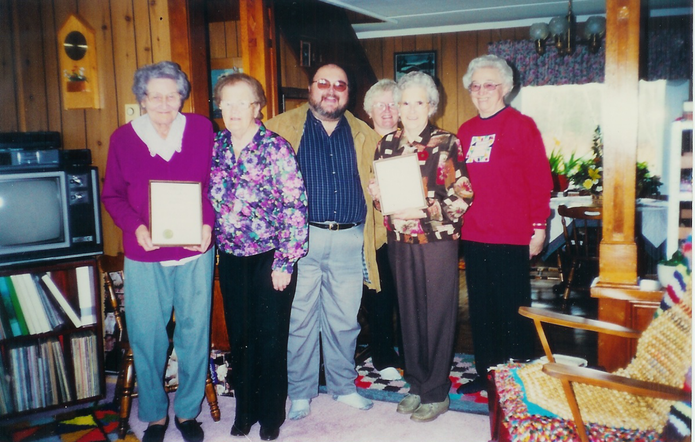

The Family Chronicle
No. 107 November 20, 2005
____________________________________________________________________

Members of the Victoria Knitting Club
From Left to right: Minnie Godfrey (Charter Member), Louise MacDougall, Tanker O’Malley (MLA), Ruth Newton, Catherine Newton, Evelyn Fryatt. Missing from photo: Jean Murdock
The Victoria Knitting Club was established in the Victoria District of Black River about 1940. Its purpose was to knit socks, mitts and sweaters for soldiers overseas. The group continued after the war knitting socks, mittens, caps, and sweaters, and sewing layettes, blankets and diapers for the Red Cross.
Later they made and sold crafts with the proceeds going to such organizations as the Red Cross,
Salvation Army, Extra Mural Hospital, Transition House and others.
In December 2002, the group was recognized for sixty years of service with the presentation of a certificate by Michael (Tanker) Malley, Member of the Provincial Legislature for the area.
Thanks to Ian Glendinning in Aberdeen, Scotland and through him, the Death Records of Langholm, Dumfries from 1855 onwards, we have additional information about early family roots.
We knew that my Great Grandfather, John Glendinning, had a sister Mary. We now know that Mary married John Blacklock on November 30, 1837 and they had at least eight children all born in Langholm.
John James born February 11, 1838
Martha born April 22, 1840
Thomas born about 1842
Irvine or Irving born about 1845
Mary born about 1847
Janet born about 1851
Margaret born October 10, 1855
Alexander born September 10, 1859
Mary (Glendinning) Blacklock died on May 2, 1891 in Langholm. As I recall, Langholm is less than 10 miles from Callister Hall.
Our Grandfather also had a brother, William, born Middlebie, Scotland, April 16,1816 and died St. Mungo, 1874. He married Grace Marshall born 1825 at Hodden and died before 1876. They had at least 3 children:
a son, name unknown
Jane born Sept 9, 1855 and died July 11, 1876 at Langholm, Scotland. She did not marry.
John born about 1840
As a matter of interest, some of Ian’s ancestors settled at Harcourt, New Brunswick and I as able to put him in touch with Bill Glendenning of Moncton who also has roots there.
Readers who maintain a printed copy of my Newsletters should note the following corrections:
No.30 - The person identified as “unknown” is Norman Ferguson, son of Hector and Cynthia (Finno) Ferguson.
No. 37 – There is no Armstrong School listed in North Haven, Connecticut.
No. 61 – Some of the children listed were born after 1939. This applies specifically to Lynn and Neil, children of Sam and Mae Fowlie; once you cross the Little Branch River, one is on the south side not the north side; in 1939, George MacDonald was married to Isobel Cameron and not Ada Taylor;
No. 67 – “Major” James MacDonald was a great Grandfather of Alex, Jimmie and Johnny “Major” Macdonald.
The Family Chronicle (Copyright) is an occasional newsletter published by Don Glendenning and posted on the family website. It is intended to share information about my family, community and the times in which I grew up. While every effort is made to be accurate, errors are likely to occur. Comments, enquiries and information may be sent to 62 Queen Elizabeth Drive, Charlottetown, PEI, C1A 3A9. Tel: 902 892 5859. Email: dglende@auracom.com Web: www.glendenning.net/don